论文与项目随谈从问题、方法到证据
在一个平台上统一移动端、计算机与网页的 GUI 智能体评测、轨迹采样与在线 RL，并用合成应用与任务训练出 9B 模型。
将可验证奖励强化学习（RLVR）应用于GUI智能体的两个根本挑战：
将可扩展执行与环境和任务自动合成相结合是关键。
环境 是智能体在其中执行动作的软件系统，如 Android 设备、桌面虚拟机或浏览器应用。一个可执行任务定义为
其中包含初始状态 、自然语言指令 和验证器 。初始状态包含回合开始前加载的应用记录、文件、账户和设置（如当前日期）。初始状态本身也是任务的一部分：同一指令在不同 下可能对应不同的正确结果。每次尝试都在独立隔离的 实例中运行，并重置到 。
验证。 验证器检查最终状态 ，并在需要时检查轨迹 。我们将任务要求表示为二元判据 ，各判据权重为 ，其中子集 为必须满足的判据。奖励和任务成功定义为
因此，奖励允许部分得分，而成功要求满足全部必需判据。判据可以通过读取应用或系统状态的代码检查，也可以由视觉语言模型（VLM）评判；MAI-Gym 同时支持两者。
运行框架是连接策略与环境的代码，运行框架既参与构建上下文（依据指令、交互历史与当前观察），也承担调研策略将模型输出解析为动作并执行。
GUI与CLI动作，一个步骤对应一次模型决策，可输出一组有序的 GUI 与 CLI 动作；步数限制和历史窗口都按步骤计数。terminate 动作结束回合，并给出最终回答及声称的成功 或失败状态。
| 智能体 | 观测 | 上下文 | 动作 |
|---|---|---|---|
| GUI 智能体 | 截图 | 最近 张截图 + 文本历史 | 点击、输入、拖拽等 |
| CLI 智能体 | 命令输出 | 文本历史，通常经过摘要 | Shell 命令 |
| MAI-Gym | 截图 + 命令输出 | 由运行框架定制 | 批量 GUI + CLI 动作 |
动作沿用Qwen-UI-Agent的，见下表：
| 动作 | 定义 |
|---|---|
| GUI 动作 | |
click |
在坐标 处点击。 |
double_click |
在坐标 处双击；触屏上为连续轻触两次。 |
long_press |
在坐标 处长按。 |
type |
输入指定文本内容。 |
hotkey |
按下组合键，如 ctrl+c。 |
open |
打开指定应用。 |
drag |
从起点坐标 拖拽至终点坐标 。 |
system_button |
按下系统按钮，可选 back、home、menu 和 enter。 |
wait |
等待指定秒数。 |
| CLI 动作 | |
cli_command |
在当前 CLI 环境执行 bash 命令。 |
| API 动作 | |
api_call |
使用指定参数调用 API。 |
| 交互与控制动作 | |
ask_user |
向用户请求信息。 |
terminate |
结束任务，给出最终回答和 success 或 failed 状态。 |
轨迹采样（Rollout） 是智能体针对任务的一次完整尝试：
将环境重置至初始状态 。
策略根据当前上下文 逐步采样动作：
执行 terminate 或达到最大步数后，结束本轮尝试，得到轨迹：
根据任务执行结果计算终局奖励 。
在线强化学习（Online RL） 使用当前策略实时采集轨迹，并在任务池 上最大化期望奖励：
与使用固定数据集的离线训练不同，在线 RL 每次更新策略后都需要重新采样轨迹，因此依赖持续、大规模的环境重置、隔离与实例供应。
采用 GRPO（Group Relative Policy Optimization，组相对策略优化），通过组内奖励比较估计优势，无需单独训练价值函数（Critic）。
对于同一任务，使用当前策略独立采样 条轨迹，分别获得终局奖励 。
轨迹 的优势定义为：
其中：
核心机制：
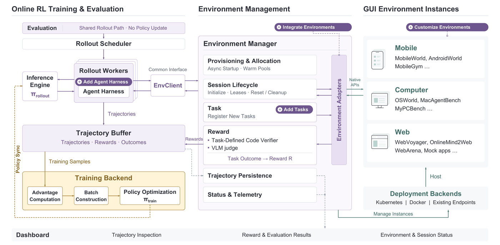
首先，所有工作负载(即不同形式的任务：采集数据、训练模型、评估)共享一条轨迹采样路径和一个智能体运行框架，因此评测、数据采集和训练使用同一个智能体（左侧）。
其次，智能体仅通过环境管理器访问所有环境；管理器提供统一接口，隐藏环境与部署细节（中部）。部署后端承载移动端、计算机和网页实例（右侧），仪表盘报告系统状态（底部）。
保持采样路径和agent harness一致，尽可能保证不同工作负载下运行机制相近，从而避免因为框架差异导致系统性偏差。
环境管理器:环境管理器提供五种操作：请求实例、观测、重置到任务、执行步骤和评估（附录 A.2）。在这些操作背后，它供应并分配实例，管理从初始化到重置和清理的整个会话，注册任务，通过代码验证器或 VLM 评判计算奖励，持久化轨迹，并向仪表盘报告状态。环境适配器将这些操作转换为各环境的原生 API，同时保留基准自身的任务初始化与验证方式；适配器完全不涉及 RL。部署后端在 Kubernetes 或 Docker 上承载实例，或连接现有手机、计算机和浏览器会话。
图2标出来四个拓展点：添加harness框架，添加任务，集成环境（通过适配器Adapter集成新的环境），定制环境（对可接入的环境做扩展定制）。
GUI轨迹采样的成本：
MAI-Gym的工作，一是在Andorid、桌面虚拟机和浏览器这三种任务上做了针对性优化，降低了重置耗时（中位数）；二是对大规模快速供应做了优化；三是高效多轮推理，分为Rollout和Training两部分，细节见下图：
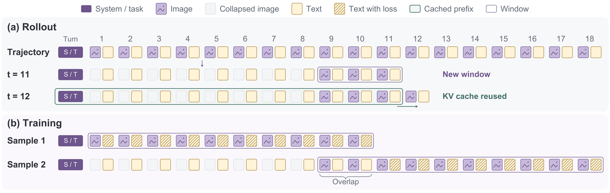
一些前置知识，每一轮上下文含文本和截图，旧截图解除占用是通过占位符的方式，当本轮上下文前缀改变时就需要重新计算KV缓存。
对于Rollout的部分，K为一个窗口的轮数，0为相邻窗口重叠数，当K+1时开启新窗口，KV缓存重新计算，1~K-O的截图变为占位符，此时新的窗口至少能看见O+1轮完整上下文，K+2开始复用KV缓存。相比last-k降低了KV缓存更新的频率，保留了一定的重叠窗口。论文取K=10,O=2。
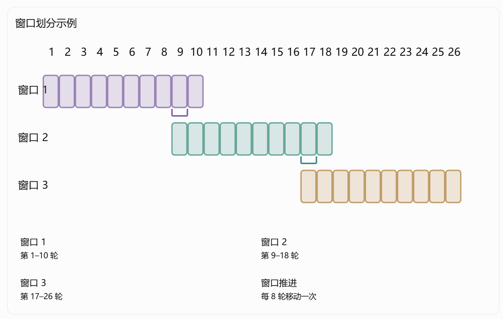
对于Training部分，采用相同的窗口划分样本（如1~K，K-O+1~2K-O），这是为了让模型训练上下文和rollout阶段尽量保持一致，用loss mask保证第二个样本中与上一个样本的重叠部分不计算loss。
支持本地checkpoint和API测评，在移动端/计算机/网页提供了3/4/3个benchmark。
这里还提供了仪表盘，检测环境与具体任务，从而区分智能体失败/环境故障等。
支持通过外部智能体查询评估基准测试轨迹。
诊断指出该练什么，合成提供练什么。合成覆盖可执行任务 的全部四项：模拟应用给出 ，跨应用世界构建给出一致的 ，任务与验证器合成给出 和经过执行测试的 。每个阶段都是一项智能体技能，即 Claude Code 这类编程智能体遵循的一组指令；技能与其产出的应用、任务一起发布。
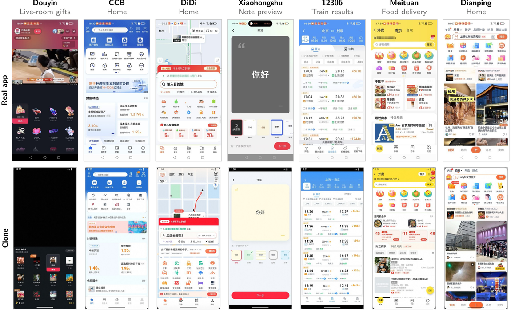
环境合成：模拟应用。 模拟应用是后端可重置的独立应用，使同一条工作流可以在无副作用的前提下重复数千次。按是否有真实应用作为参照分两类：
| 类型 | 构造方式 | 数量 | 用途 |
|---|---|---|---|
| 真实应用克隆 | 编程智能体参考真实应用从零重建 | 7 个：12306、建设银行、滴滴、美团、大众点评、抖音、小红书 | 转账、下单、发帖等动作不可撤销，无法在真机上反复练；克隆在可重置后端上复现预订、下单、支付等主流程 |
| 新颖应用 | 无真实参照，全新构造 | 42 个（HTML5 模板上的确定性状态机） | 任何模型都不可能在训练中见过，用来测"仅凭奖励能否学会陌生界面" |
克隆的正确性靠人工比对：测试人员在克隆与真实应用上执行同一任务并对照过程中的界面（附录 A.7.1）。新颖应用是运行在 Chromium 中的确定性状态机——相同 与动作序列必然产生相同结果，因此重置与奖励是精确的；流水线先在无浏览器条件下测逻辑，再在 Chromium 中运行同一份代码，并用参考解、重置测试和两次运行的一致性检查来验收（附录 A.7.2）。42 个新颖应用含 840 个任务、3,196 项针对应用状态、动作历史和提交答案的可执行检查。
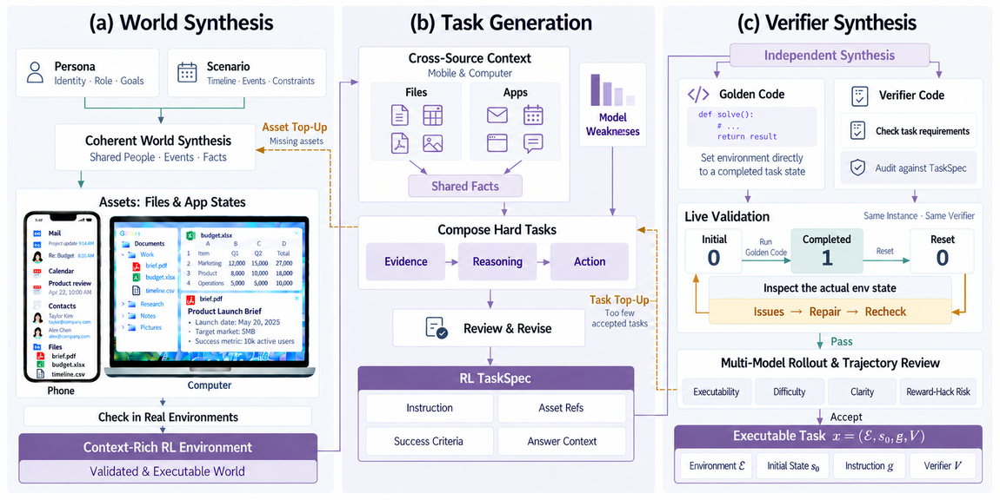
跨应用世界构建。 真实任务的前提是 里已经存在完成任务所需的证据和资源，所以顺序是"先造世界，再写任务"。人物设定（身份、角色、目标）与情境（时间线、事件、约束）合成共享同一批人物、事件和事实的文件与应用记录：项目说明、预算表、邮件往来、日历条目分别描述同一项目的不同侧面。共享上下文使任务必须以取证为前提——不是"创建一个叫预算审查的日程"，而是"把预算审查挪到修订版表格截止日的次日"，需要读邮件、表格和日历。缺资源时流水线回填并验证更新后的世界；初始化模板把这套世界灌进运行中的实例（移动端填应用数据，计算机端填桌面工作区），得到的即为可复现的 。
任务与验证器合成。 三步，核心目标是让 检查"用户要求的结果"，而不是"某一种解法碰巧采用的做法"：
发布 2,000 个任务，MobileWorld 与 OSWorld 各 1,000（附录 A.6）。模型参与造题与审题，但在线 RL 的奖励只来自验证器执行。
三个阶段的共同约束是"可重置、可重放"：克隆要对真实副作用做回滚，新颖应用被限定为确定性状态机，跨应用世界要能重灌同一份 。只有这三件事成立，同一任务被反复尝试数千次后 与 才仍给出同一个判定。
与评测同构，一条命令启动：mai-gym train --config configs/mai-gym-9b.yaml。YAML 指定策略检查点、任务池及其环境、算法与超参、采样预算与并发、历史窗口、训练后端与并行（附录 A.5）。训练器基于 slime，用 Megatron-LM 训练、SGLang 采样，支持 GRPO、DAPO、GSPO、REINFORCE++、SAO、PPO；各算法共用同一份记录（轨迹、奖励、策略生成词元的对数概率）。主方案是 GRPO。
相比文本 RL，GUI 训练在三处更难，对应三个机制：
| 难点 | 机制 | 要点 |
|---|---|---|
| 采样昂贵，预算应只花在还能教会策略的任务上 | 策略自适应任务采样 | 按历史成功率分配尝试次数；整组尝试齐了才算优势 |
| 轨迹长且截图密集，训练不该反复重编码同一段历史 | 窗口式打包 | 每个采样窗口成为一条训练样本，损失只落在新增轮次 |
| 训练器必须看到与推理引擎完全相同的输入 | 训练–采样一致性 | 启动检查 + 词元级对数概率的 KL 判停 |
策略自适应任务采样。 GRPO 只从组内奖励有差异的尝试中学习，对恒成功或恒失败的任务采样纯属浪费。每轮采样前调度器按历史尝试估计各任务成功率：未见任务和"有时能解"的任务拿满 次；策略从未解出的任务与成功率超过 的已掌握任务拿较小但非零的预算（，分别为 4 次和 2 次），以便策略变化后重新检查。只有某任务的全部尝试都处理完毕才计算其优势，因此完成顺序和轨迹长度不会使组内基线产生偏差。
窗口式打包。 轨迹的每个窗口成为一条因果训练序列，训练器按窗口而非按步骤编码截图。两种常见替代各有权衡：逐步把每步当独立样本，每次都重编码共享历史；轨迹级把整条轨迹打包成一条序列，只在上下文恰好延伸前一条时精确，长且多图的轨迹很快超出显存。窗口介于两者之间——损失只作用于窗口新增步骤： 时第一个样本训第 1–10 轮，第二个样本只训第 11–18 轮，第 9–10 轮仅作上下文，没有输出被重复训练。窗口重放采样时的精确词元；若各轮不构成一致的词元前缀，打包器回退到逐步样本。控显存靠三件事：截图以压缩形式到达训练器、仅在对应微批次调度时解码；视觉塔选择性激活重算；上下文、流水线、数据并行可配。
训练–采样一致性。 训练正确性取决于它与采样的接近程度：训练器若以不同方式重建提示词或处理图像，策略就在从未见过的输入上被更新。启动时检查已知的多模态处理故障；运行时逐响应词元比较两阶段的对数概率，用 KL 的 估计量决定运行是否继续——与平均绝对差不同， 由少数严重不一致的词元主导，因此突然上升通常指向生成内核损坏、打包历史错位，或两端版本不一致。
主要超参（附录 A.4）：GRPO，组大小 8，逐词元损失，学习率恒为 ，KL 系数 加在损失上而非奖励上，无熵奖励，Adam 权重衰减 0.1、，微批次为单条序列且计数单位是窗口，历史 、。
训练 MAI-Gym-9B。 从 Qwen3.5-9B 出发，两阶段：先在移动端与桌面混合数据上监督微调预热，使模型学会遵循混合 GUI 与 CLI 指令；RL 阶段在一次运行中把移动端与计算机任务联合训练。这点与常见方案不同——后者在各领域分别 RL，再用参数平均合并专家，而 MAI-Gym 共享一条采样路径，一次运行即可从两个域抽任务、只训一个策略。具体设置：GRPO，合成流水线产出的 5,000 个任务（任务来自 MobileWorld 与 OSWorld 环境），仅用代码验证器奖励，策略自适应采样，，512 块 GPU，并发环境峰值 20,000，约 96 小时。
基准与口径。 七个基准，3 移动 + 4 计算机：
| 类别 | 基准 | 说明 |
|---|---|---|
| 任务 OOD | MobileWorld（仅 GUI）、OSWorld-Verified | 环境与训练共享，任务不共享 |
| 环境 OOD | AndroidWorld、MobileGym、MacAgentBench、MyPCBench | 环境完全未参与训练 |
| 环境 OOD | OSWorld 2.0 | 另含 31 个训练环境没有的自托管网站与长时程工作流 |
评测走训练时同一个运行框架（温度 0、每任务 3 次尝试），各基准用自己的验证器和指标，OSWorld 2.0 报二元准确率／部分得分，MobileGym 报部分得分。汇总用无权平均：移动均值取 3 个、计算机均值取 4 个，跨域平均是这两者的均值；任务 OOD 平均取 2 个、环境 OOD 平均取 5 个，所有平均都按 OSWorld 2.0 的二元分数与 MobileGym 的部分得分计算。
基线三类。 前沿模型：Claude Opus 4.8、GPT-5.5、Qwen3.8-Max（API）与开放权重的 Qwen3.8-27B；GUI 智能体模型：GUI-Owl-1.5-8B/32B、UI-Venus-2-9B、SCALECUA-Qwen3.5-9B、EvoCUA-1.5-32B、CUA-GYM-35B-A3B、CUA-GYM-397B-A17B、Qwen-CUA，其中 UI-Venus-2-9B 与 SCALECUA-Qwen3.5-9B 与本文同规模；基础模型：Qwen3.5-9B 本体。除 8 个由作者自跑的数字外，其余取自已发表报告与排行榜。
| 模型 | 规模 | 访问 | MobileWorld | AndroidWorld | MobileGym | OSWorld-Verified | OSWorld 2.0 | MacAgentBench | MyPCBench |
|---|---|---|---|---|---|---|---|---|---|
| 前沿模型 | |||||||||
| Claude Opus 4.8 | -- | API | 69.2 | 75.0 | 50.7 | 83.4 | 20.3/54.8 | 58.4 | 62.0 |
| GPT-5.5 | -- | API | 62.4 | 74.1 | 48.1 | 78.7 | 13.9/47.5 | 66.7 | 47.3 |
| Qwen3.8-Max | 2.4T-A95B | API | 77.8 | 85.3 | 61.3 | 86.1 | 19.4/46.7 | 74.3 | 48.6 |
| Qwen3.8-27B | 27B | 开放 | 70.1 | 81.9 | 57.5 | 84.3 | 19.4/48.0 | 65.4 | 28.5 |
| GUI 智能体模型 | |||||||||
| GUI-Owl-1.5-8B | 8B | 开放 | 38.2 | 71.6 | 15.1 | 52.9 | 0.0/1.6 | 10.2 | 1.8 |
| GUI-Owl-1.5-32B | 32B | 开放 | 43.9 | 69.8 | 20.3 | 56.5 | 0.9/2.5 | 17.2 | 6.3 |
| UI-Venus-2-9B | 9B | 开放 | 75.2 | 80.2 | 52.7 | 70.8 | 0.0/7.5 | 36.2 | 6.3 |
| SCALECUA-Qwen3.5-9B | 9B | 开放 | 12.8 | 47.4 | 13.5 | 68.7 | 0.0/2.2 | 3.9 | 1.1 |
| Qwen-CUA | 397B-A17B | 开放 | -- | -- | -- | 86.2 | 18.5/48.4 | 69.2 | 58.7 |
| EvoCUA-1.5-32B | 32B | 未发布 | -- | -- | -- | 63.2 | -- | -- | -- |
| CUA-GYM-35B-A3B | 35B-A3B | 未发布 | -- | -- | -- | 62.1 | -- | -- | -- |
| CUA-GYM-397B-A17B | 397B-A17B | 未发布 | -- | -- | -- | 72.6 | -- | -- | -- |
| 本文方法 | |||||||||
| Qwen3.5-9B（基础） | 9B | 开放 | 18.0 | 57.8 | 9.0 | 41.8 | 0.0/2.5 | 20.7 | 6.5 |
| MAI-Gym-9B | 9B | 开放 | 78.4 (+60.4) | 75.9 (+18.1) | 46.5 (+37.5) | 76.2 (+34.4) | 3.7/11.3 (+3.7/+8.8) | 41.3 (+20.6) | 15.2 (+8.7) |
任务 OOD。 同一个检查点跑完七个基准，而四个 GUI 智能体基线只报计算机结果。在两个训练过的环境上，MAI-Gym-9B 得 78.4 与 76.2，是同规模最优：领先 UI-Venus-2-9B 3.2 与 5.4 个百分点，领先 GUI-Owl-1.5-8B 40.2 与 23.3 个百分点；也超过在此二基准上报数的更大模型（含 GUI-Owl-1.5-32B，以及 OSWorld-Verified 上的 EvoCUA-1.5-32B、CUA-GYM-35B-A3B、CUA-GYM-397B-A17B），仅 397B-A17B 的 Qwen-CUA 在其上更高。对前沿模型，MobileWorld 上超过 Opus 4.8（69.2）、GPT-5.5（62.4）与 Qwen3.8-Max（77.8），OSWorld-Verified 上距 GPT-5.5 仅 2.5 个百分点。训练未用任何基准任务，所以这两个分数衡量的是在训练过的环境里解新任务的能力。
环境 OOD。 移动端仍有竞争力但不再领先：AndroidWorld 75.9、MobileGym 46.5，分别比 UI-Venus-2-9B 低 4.3 和 6.2 个百分点（都高于 GUI-Owl-1.5-8B）。计算机侧更难：OSWorld 2.0 为 3.7/11.3，MacAgentBench 41.3，MyPCBench 15.2，均为同规模开放 GUI 智能体中已报告的最好水平。
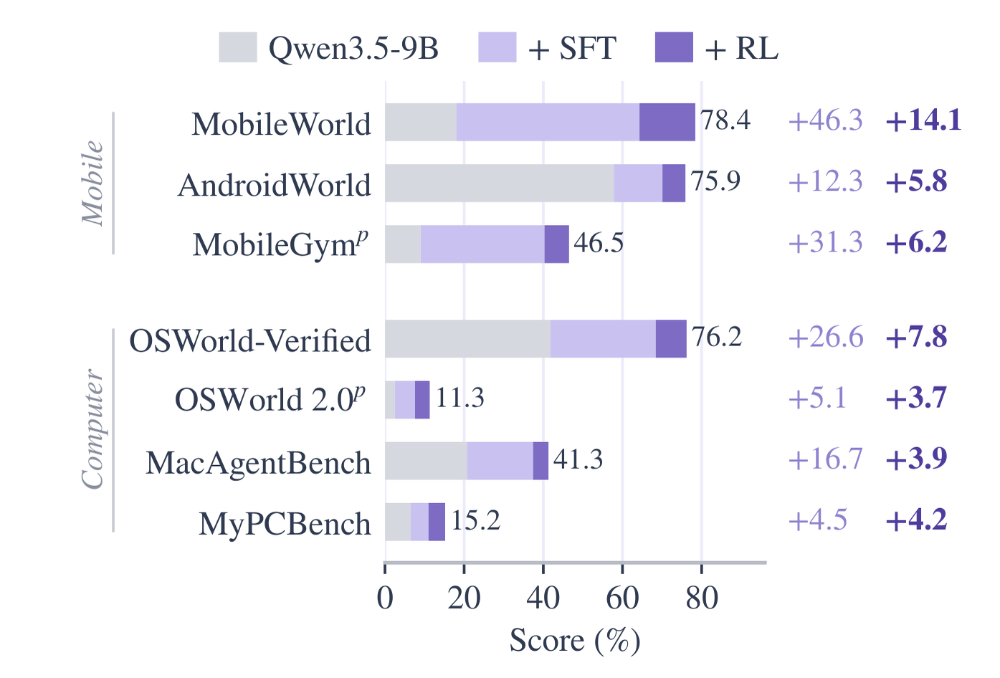
SFT 与联合 RL 的增益。 图 6 把每项分数拆成基础模型、SFT 预热增益与联合 RL 增益（SFT 检查点按本文协议评测，上标 为部分得分）。SFT 贡献了大部分提升：任务 OOD 平均 29.9→66.4，环境 OOD 平均 18.8→32.3。联合 RL 再把跨域平均从 44.1 推到 50.5——移动均值 +8.7、计算机均值 +4.2，说明一次运行联合训练两个域可以同时改善两侧；两个任务 OOD 基准分别 +14.1 与 +7.8，环境 OOD 平均 +4.2，且五个环境 OOD 基准逐个都涨，说明从两个环境的合成任务学到的能力可迁移到别的环境。
口径自查：基础环境 OOD 平均 ；终态环境 OOD 平均 ，与 32.3+4.2 一致；跨域平均 也自洽。任务 OOD 的 66.4 指 SFT 检查点的 ，不是终态均值（77.3），读表时容易混。
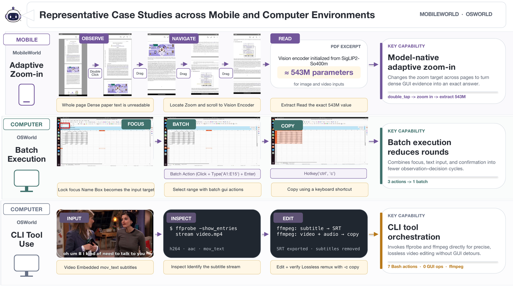
训练学到的高效行为。 图 7 三个案例：计算机侧当 CLI 是最短路径时直接调命令行——用 ffprobe 查视频流、ffmpeg 导出字幕并无损重封装，绕开媒体编辑里更长的 GUI 路径；支持批量 GUI 动作，电子表格里"锁定焦点→输入区域→确认→快捷键复制"可合成更少的高层动作，减少步数、观测–决策循环与用户词元成本；移动端出现模型原生的自适应放大，用应用自带双击缩放并跨页移动放大目标，读取全页视图下看不清的小字（如 PDF 里的参数数值）。这些提升不只是"动作选得更准"，还包括为任务选择合适的交互方式：直接 GUI、批量 GUI、外部工具。
六个问题各对应一节：基础设施能否撑住在线 GUI RL 的规模、联合 RL 是否优于专家合并、RL 增益如何随合成任务数增长、克隆里的训练能否迁移到真实应用、能否仅凭奖励学会陌生应用、GRPO 与 SAO 在 MAI-Gym 上如何比较。
| 环境 | 1,000 实例启动（秒） | 重置 p50 / p95（秒） | 不计分中止（%） |
|---|---|---|---|
| 移动端 | 328.4（≥6× 快于 KVM/裸机估算） | 165.0 / 184.0 | 1.2 |
| 计算机 | 88.9 | 37.2 / 100.1 | 1.9 |
| 浏览器 | 94.2 | 6.0 / 27.0 | 0.0 |
启动时间指 1,000 个环境的 GUI 全部就绪；不计分中止指环境故障后重跑、未计入评测的尝试。三端都能在几分钟内拉起千级 GUI 就绪实例且中止率低；移动端 328.4 秒至少比串行 KVM 方案快 6 倍（后者为 100 批×10 个×等 20 秒的估算，≥1,980 秒）。评测方面：每任务 3 次尝试跑完七个基准约 3 小时。
| 历史方式 | 前缀缓存命中（%） | 采样步/秒 | 训练输入词元/轨迹 | 训练更新（秒） |
|---|---|---|---|---|
| 逐步 | 42.5 | 2.3 | 566,375 | 2166.4 |
| 窗口式（K=10, O=2） | 85.9（+102.1%） | 1.9（−18.9%） | 86,855（−84.7%） | 810.9（−62.6%） |
窗口式换来的是缓存命中翻倍与训练词元降到约 1/6.5，代价是采样吞吐下降 18.9%。在本文的配置下这是更划算的交换：瓶颈在训练更新（2,166→811 秒），不在采样。
对照方案是"先训两个领域专家，再按权重做参数平均合并"；所有运行从同一预热检查点出发，联合 RL 用两个专家预算之和。
| 设置 | MobileWorld | OSWorld-Verified |
|---|---|---|
| 移动端专家 | 76.4 | 71.4 |
| 计算机专家 | 73.5 | 73.8 |
| 合并 70/30 | 74.4 | 68.4 |
| 合并 50/50 | 76.4 | 73.7 |
| 合并 30/70 | 73.5 | 74.8 |
| 联合 RL | 78.4 | 76.2 |
合并能保住相当一部分领域增益，但没有一种权重同时在两侧领先：MobileWorld 上最好的合并（50/50）是 76.4，OSWorld-Verified 上最好的（30/70）是 74.8，都低于联合训练的 78.4 / 76.2。合并权重比本身也在透露信息——单侧最优的权重恰好把另一侧拉下去。
从 MobileWorld 与 OSWorld 的合成任务里随机抽 500、1,000、5,000 个任务，算法、超参、采样预算全部固定。
| 合成训练任务 | MobileWorld | OSWorld-Verified |
|---|---|---|
| 0.5k | 69.2 | 69.7 |
| 1k | 73.5 | 70.9 |
| 5k | 78.4 | 76.2 |
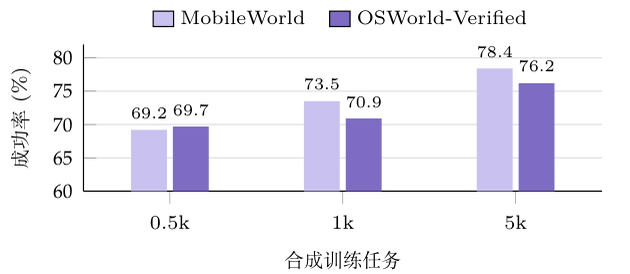
两个基准的任务都没参与训练，所以这是泛化随任务多样性上升；OSWorld-Verified 在 1k 处还小幅回落（70.9），5k 才明显起来。
用 52 个配对任务，比较仅克隆内 RL 前后，12306 克隆与实体手机上真实 12306 的成功率。
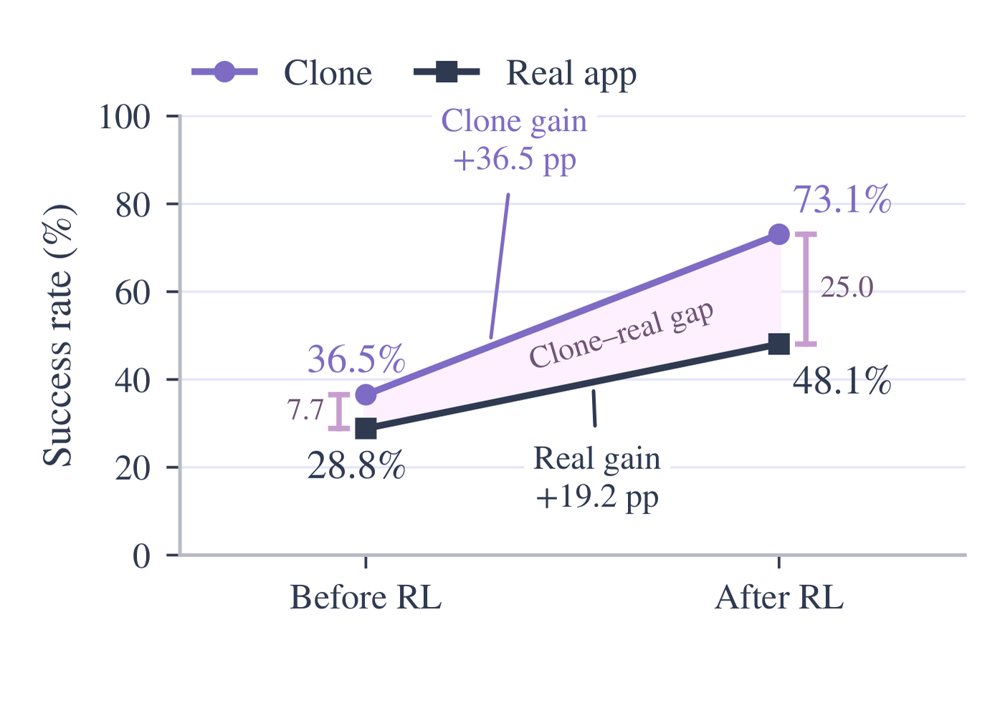
克隆 36.5→73.1，真实应用 28.8→48.1（+19.2 个百分点）。图 11 给出同一个能力在两边的表现：RL 后策略在克隆与真机上都正确算出"下周一"并设置提醒。迁移并不完整——克隆与真机的差距从 7.7 扩大到 25.0 个百分点，克隆内的增益不能直接当作真实应用的增益。
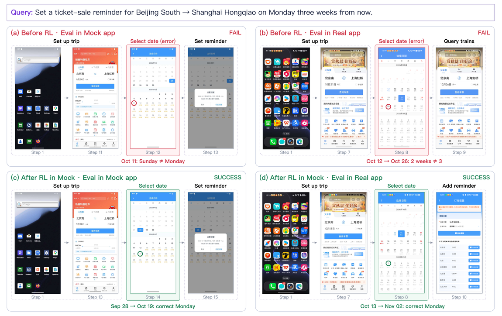
252 个任务训练、62 个留出任务各试一次，步数预算 60。成功率 25.8→45.2；耗尽预算的尝试 27→5；平均轨迹长度 33.3→16.4 步。全程只用验证器奖励，不给这些应用的任何示范。
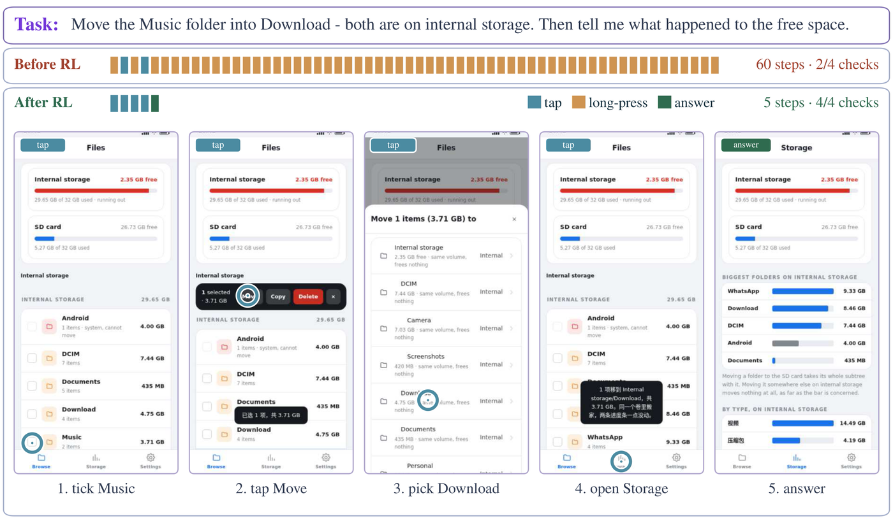
图 12 的留出任务：RL 前反复无效长按把 60 步预算烧完、只过 2/4 项检查；RL 后 5 步完成——选中 3.71 GB 的 Music 文件夹、移入 Download、打开存储页、回答"同一卷内移动不释放空间"（可用仍是 2.35 GB），四项检查全过。这类"移动后可用空间不变"的判断正是纯行为克隆难以覆盖的部分。
SAO 用异步单轨迹更新替代分组采样，以学习得到的价值模型估计优势。两条曲线早期任务成功率相近，区间末尾 SAO 略低于 GRPO；计时上 SAO 减少了采样等待，但额外的评论家计算（每次演员更新配两次评论家更新）基本抵消了这部分收益，在测试配置下没有明确的总体训练时间优势。
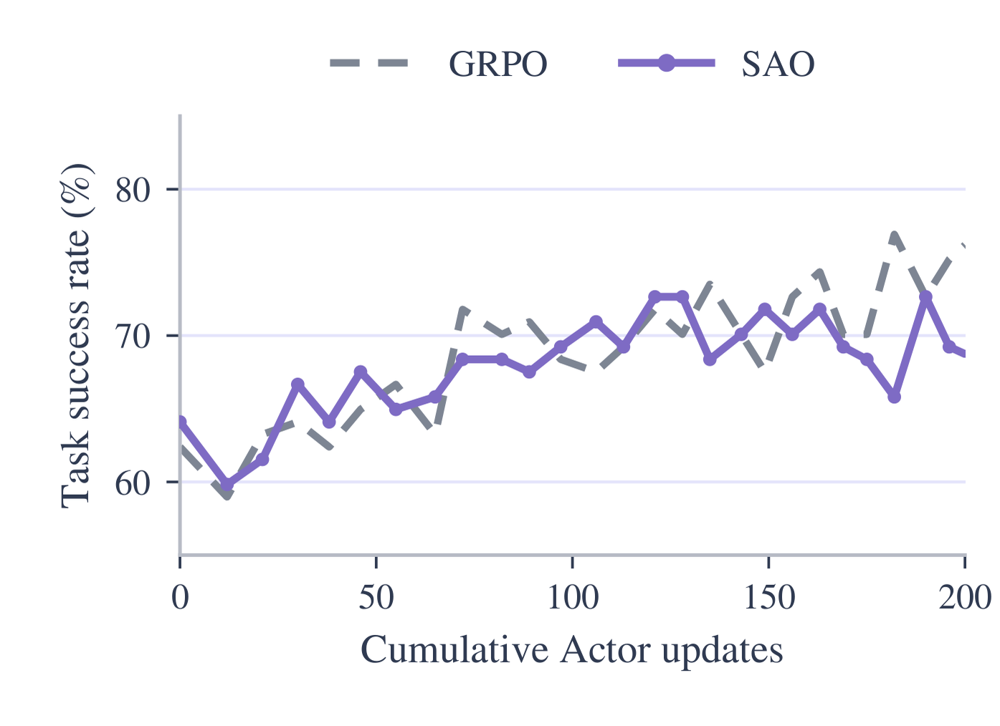
GUI 智能体的 RL。 在线 RL 已是改进 GUI 智能体的主流手段，但多数工作只针对单一领域：Android 侧的 DigiRL、DistRL、MobileRL、MobileGUI-RL 研究奖励设计、异步采集与自适应训练；网页侧的 WebRL 用自演化课程，WebAgent-R1 做端到端多轮 RL；计算机侧的 ComputerRL 用并行执行扩展 RL，DART-GUI 把训练与采样解耦，Qwen-CUA 从截图学原生计算机操作。后续系统改的是训练循环：EvoCUA-1.5 加策略感知过滤与自适应课程的异步多轮 RL，UI-Mate 把环境内训练与上下文示范结合，SCALECUA 把可验证任务合成接到高效 RL 上。UI-TARS-2、Qwen-UI-Agent、UI-Venus-2 进一步用单一策略覆盖移动端、计算机与网页，常见跨域做法仍是分域训练专家再事后合并。这些工作的产出是模型与训练方案，环境与训练栈多为自建专用。MAI-Gym 与之互补：给这些方案一个跨域的统一开放平台，并在一次 RL 运行中联合训练移动端与计算机任务。
GUI 训练平台与基础设施。 开放平台要么偏"跑智能体"，要么偏"供任务"：
| 系统 | 平台范围 | 基准评测 | 在线 RL（环境数） | 新环境 | 奖励 |
|---|---|---|---|---|---|
| BrowserGym | 网页 | 8 | ✗ | ✗ | 代码 |
| WebGym | 网页 | ✗ | 256 | ✗ | VLM |
| MobileGym | 移动（浏览器模拟） | ✗ | 256 | 模拟应用 | 代码 |
| GUI-Genesis | 移动 | ✗ | ✗* | 模拟应用 | 代码 |
| PhoneWorld | 移动 | ✗ | ✗* | 模拟应用 | 代码 |
| CUA-Gym | 计算机 + 网页 | ✗ | ✗* | 模拟网站 | 代码 |
| Gym-Anything | 三端 | ✗ | ✗ | 真实软件 | VLM |
| SCALECUA | 计算机 | 2 | 600 | ✗ | 代码 |
| MAI-Gym | 三端 | 10 | 20,000 | 模拟应用与网站，跨应用共享世界 | 代码 + VLM |
（*已跑 RL 但未发布代码。）基础设施类平台让评测或训练可复现：BrowserGym 把网页基准统一到一个接口，WebGym、MobileGym、SCALECUA 在数百并行环境上跑在线 RL，ClawGUI 提供训练–评测–部署框架。数据类平台（CUA-Gym、Gym-Anything、GUI-Genesis、PhoneWorld）贡献环境与任务，但不发布训练代码，也不提供在既有基准上跑的方法。GUI 之外的 AgentGym、GEM 面向文本与工具环境；verl、OpenRLHF、AReaL、slime 扩展策略优化但不管理 GUI 环境——MAI-Gym 的训练器正建立在 slime 上。一致性也被单独点出：只换运行框架就能改变固定模型的分数，评测与训练各写一套代码时，测的就不是训练的那个智能体。
环境与任务合成。 基准自带的任务只有数百个，远不够在线 RL 消耗，于是出现两类权衡。一条路用 VLM 判成功：ZeroGUI 生成任务并用 VLM 给奖励，AutoPlay 先探索应用再提任务，OS-Genesis 反向合成轨迹；易扩展，但假阳性奖励会被策略利用。另一条路用代码判奖励，可靠但覆盖面窄：GUI-Genesis 把应用转成带可执行断言的轻量网页环境，AutoWebWorld 把环境建成有限状态机，InfiniteWeb 构建可验证网页任务，AutoEval 从移动 UI 子状态推导奖励；更大规模上有 CUA-Gym 的有依据计算机任务池、MobileGym 与 PhoneWorld 的模拟移动应用、OpenComputer 的应用专用验证器。这些系统大多从单个输入文件、或同一应用所有任务共用的一份样例数据起步。任务生成也可随学习者调整：WebRL 从失败尝试造新任务，TRACE 把反复出现的失败转成针对特定能力的环境，GenEnv 与 Agent-World 让环境与智能体共同演化。MAI-Gym 把这几条合起来用于统一 GUI 任务：先建由相互关联的文件与应用记录组成的跨应用世界再写任务；用失败诊断引导生成；在写验证器代码之前固定成功判据；验证器必须通过执行测试才被接受；模拟应用里既有测真实迁移的克隆，也有测陌生界面适应能力的新颖应用。
MAI-Gym 是面向移动端、计算机与网页的开源一体化平台，评测、数据采集与训练共享同一条轨迹采样路径和同一个智能体运行框架，所以"评测的智能体"就是"训练的智能体"；环境管理器服务十个基准，已验证 20,000 个并行实例。训练内容来自三件合成物：模拟应用、由关联文件与应用记录构成的跨应用世界、验证器经执行测试的任务。一次移动端+计算机联合 RL 得到 MAI-Gym-9B：MobileWorld 78.4、OSWorld-Verified 76.2，为 10B 以下开放 GUI 智能体的最好成绩；相对 SFT 预热，RL 在训练环境之外的五个基准上都有提升。分析结论是：联合训练优于分域专家合并，更大的合成任务池增强策略，克隆中学到的技能能迁移到真机（实体手机 28.8→48.1）。
发布物：框架、合成技能、49 个模拟应用（7 克隆 + 42 新颖）、2,000 个验证过的任务、模型检查点。
reqEnvs(spec, n) 供应实例、observe(h) 取观测、reset(h, x) 按任务初始化、step(h, a) 执行动作、eval(h, x) 调用验证器；分配、会话管理、轨迹记录与奖励传递在管理器侧统一实现。会话带租约，防止被替换的工作进程继续发动作；改状态的操作带调用方标识符，重试不会让同一动作生效两次。name、group_size、learning_rate、kl_loss_coef、per_token_loss、reward_allocation）、采样（success_threshold 即 、fail_budget、mastered_budget）、rollout（并发、会话数、温度、步数上限、上下文预算）、history（window、overlap、token_native_history、windowwise_train）、观测传输（oss 或内联）、训练后端与并行配置。凭据不写入文件，加载时从环境读取。前面正文里嵌进的图都是机制图与结果图，另有四张图只在文字里提过：图 1（全文总览）、图 13（仪表盘）、图 14 与图 15（合成任务示例）。这四张读一遍，可以顺便核对全文的数字口径。
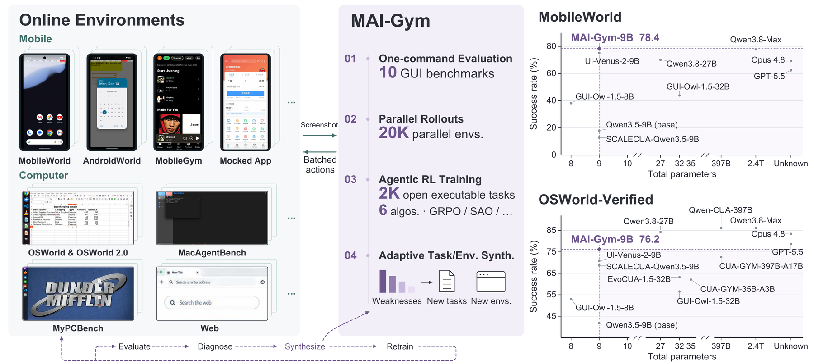
图 1：一句话结构。 左栏是环境侧——移动端（MobileWorld、AndroidWorld、MobileGym 与模拟应用）与计算机／网页侧（OSWorld、OSWorld 2.0、MacAgentBench、MyPCBench），向中间送截图、收回批量动作。中栏是 MAI-Gym 的四个能力，正好对应全文四个数字：01 一键评测 10 个基准、02 并行轨迹采样 20K 环境、03 智能体 RL 训练 2K 开放可执行任务 × 6 种算法、04 面向模型弱点的任务／环境合成；底部闭环是 Evaluate → Diagnose → Synthesize → Retrain。右栏把 MobileWorld 与 OSWorld-Verified 的成功率对参数量画成散点，9B 的点落在高分位——这就是摘要里"低于 10B 的开放 GUI 智能体中最好"的那句话的图形版。与图 2 的分工：图 1 讲平台提供哪四种能力，图 2 讲这些能力为什么能共用一条采样路径。
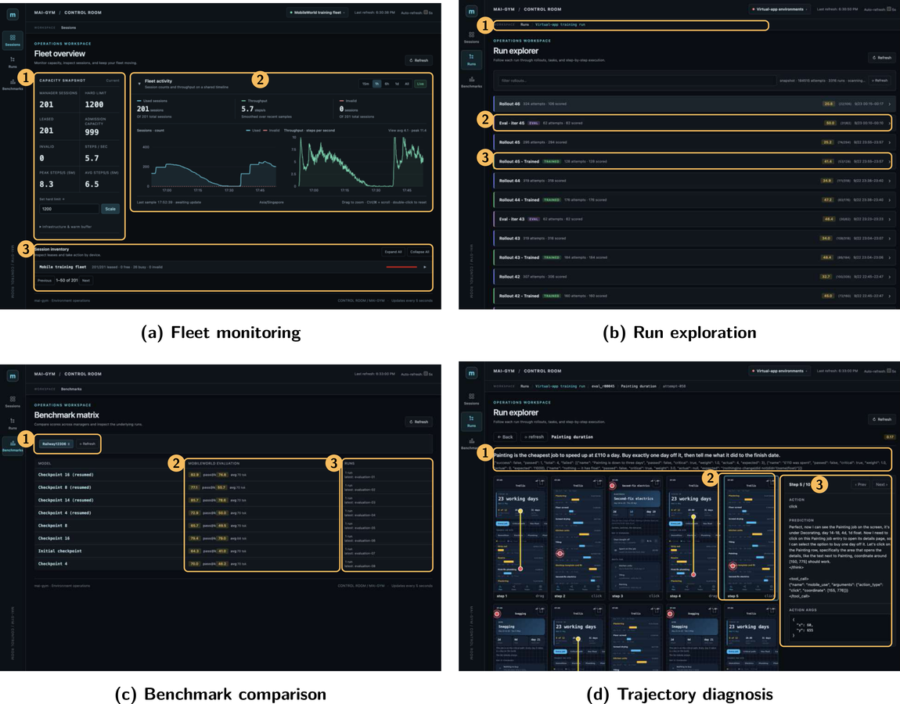
图 13：仪表盘四视图，对应 3.3 节提出的三个问题。
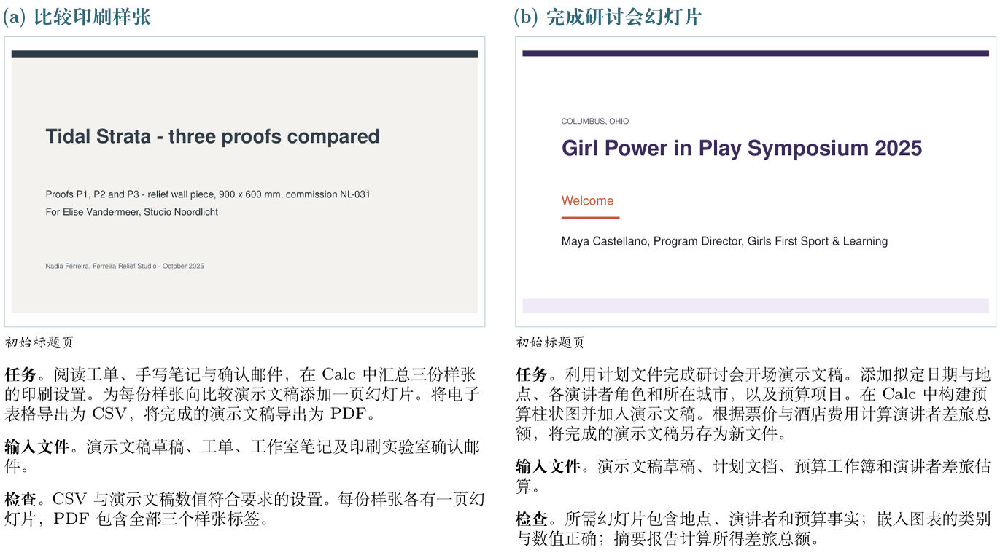
图 14：两个桌面合成任务（附录 A.6）。左 (a) 比较印刷样张：读工单、手写笔记与确认邮件，在 Calc 里汇总三份样张的印刷设置，为每份样张在演示文稿里加一页，最后把表格导出 CSV、演示文稿导出 PDF；右 (b) 完成研讨会开场幻灯片：用计划文档、预算工作簿、差旅估算补齐日期／地点／演讲者／预算项，在 Calc 里做预算柱状图插进演示文稿，并算出差旅总额另存新文件。两栏的检查项都只落在"文件里能读出来的数值与页数"上：CSV 与幻灯片的数值、每份样张一页、PDF 含三个标签、图表类别与数值、摘要里的差旅合计。这正是 3.4 节"先定要求再写验证器"的可见样本——验证器查的是结果，不是某条操作路径。
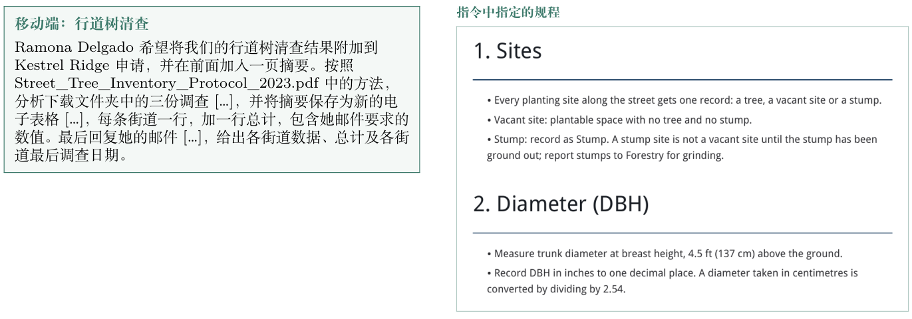
图 15：移动端"行道树清查"。左侧指令是一串依赖：按 Street_Tree_Inventory_Protocol_2023.pdf 的方法分析下载目录里三份调查，摘要表每条街道一行、加一行总计，最后回邮件给出各街数据、总计与最后调查日期。右侧就是那份规程的截图：种植点只能记 tree／vacant／stump 三态（树桩在被林业部门清除前不算空位），胸径在离地 4.5 英尺（137 厘米）处量，单位英寸保留一位小数，厘米要先除以 2.54。
这张图解释了合成任务与"问答式"任务的差别：单位换算规则、三态定义这些知识不在模型参数里，而在任务自带的文件里，策略必须先检索到规程、再按规程换算。4.3.3 里任务池从 0.5k 扩到 5k 带来 +9.2／+6.5 的提升，靠的正是这类"证据在环境里"的任务多样性。
贡献四条与证据位置。 引言的四条贡献可以在正文里逐条对上：
| 贡献（引言） | 证据 |
|---|---|
| 统一、可扩展的评测与在线 RL 平台 | 3.1 共享采样路径与四个扩展点；3.2 重置／供应／多轮推理；4.3.1（三端各 1,000 实例启动耗时、20,000 并行、7 基准 ×3 尝试约 3 小时） |
| 应用与任务自动合成 | 3.4（模拟应用、跨应用世界、经执行测试的验证器）；4.3.3 任务规模曲线；4.3.5 新颖应用 25.8→45.2 |
| <10B 最强开源 GUI 智能体 | 4.2 表（MobileWorld 78.4、OSWorld-Verified 76.2）；4.3.2 联合 RL 与专家合并的对照 |
| 开放资源 | 49 个模拟应用（7 克隆 + 42 新颖）、2,000 个任务（MobileWorld 与 OSWorld 各 1,000，均带经执行测试的验证器）、框架与合成技能、模型检查点、附录 A.5 的完整 YAML |
摘要、引言与正文的数字全部一致（78.4／76.2／28.8→48.1／20,000／2,000）。唯一需要留神的是引言里" 个任务"只出现在 4.3.4 的克隆迁移实验，而七个基准的评测是每任务 3 次尝试——两个 52 与 3 不是同一层面的计数，别混着引用。